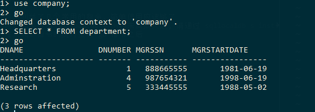

SqlLocalDB 和 Sqlcmd
Table of Contents
1 简介
本文介绍如何通过 sqllocaldb, sqlcmd 搭建一个 简单 的 sql server 学习开发环境.
1.1 sqllocaldb 介绍
sqllocaldb 是微软为开发者量身定制了一款专门用于编程开发的小数据库.
sqllocaldb 具有完整 sql server 的基本功能, 足够用于基本的学习和开发使用.
- 优点:
- 体量小, 安装包只有 44M
- 安装方便, 完整版可能因为各种各样的原有安装失败, 而这个版本双击安装即可. (卸载双击安装包即可卸载)
- 缺点:
- 只能创建基本的数据库实例, 连执行 SQL 指令的地方都没有
- 命令行界面 (这个看个人喜好了, 我个人还是比较喜欢的…)
1.2 sqlcmd 介绍
sqlcmd 在老版本的 sqlserver 中叫做 osql.
可以通过 sqlcmd 在命令行界面下输入 SQL, T-SQL 指令来操作数据库, 比如: sqllocaldb 创建的数据库实例.
- 优点:
- 体量小, 安装包只有 2M, 对, 只有 2M
- 使用方便, 该有的功能基本都有
- 缺点:
- 具有依赖环境: sql native client
- 命令行界面 (同上)
2 安装
2.1 通过VS安装
这是最简单直接的安装方式, 只需要勾选几个选项就够了.
VS 2017 示例:

2.2 通过安装包安装
这个安装方式相对麻烦一些, 如果你没有安装 VS 的话, 可以这样安装.
- 下载链接:
- sqlclient 下载时选择对应版本(x86, x64) 的 sqlncli.msi 即可
- sqlcmd 下载选择对应的版本即可(x86, amd64)
- sqllocaldb 下载的时候选择对应版本(x86, x64)的 sqllocaldb.msi 即可
注: 在安装 sqlcmd 之前请先安装 sqlclient
注: 安装时应该会自动添加环境变量, 如果没有添加, 安装路径默认为:
C:\Program Files\Microsoft SQL Server\120\Tools\Binn\
其中: 根据版本, 可能位于 File(x86), 110... 等位置. 找到 SQLCMD.exe 和
sqllocaldb.exe 添加到环境变量即可
3 使用
3.1 使用sqllocaldb
sqllocaldb -? 查看使用帮助
几个常用的指令:
sqllocaldb c instance_name [-s] -- 创建实例 instance_name, 加 -s 创建后启动实例 sqllocaldb d instance_name -- 删除实例 sqllocaldb s instance_name -- 启动实例 sqllocaldb p instance_name [-i|-k] -- 关闭实例, -i 直接关闭, -k 等待所有链接关闭后关闭 sqllocaldb i -- 列出当前用户所拥有的所有现有 LocalDB 实例以及所有共享的 LocalDB 实例 sqllocaldb i instance_name -- 打印有关指定的 LocalDB 实例的信息 sqllocaldb v -- 列出在计算机上安装的所有 LocalDB 版本
注: sqllocaldb 将空格作为分隔符处理, 需要用引号将包含空格和特殊字符的实例名称引起来
注: 只列举了几个常用的指令, 完整信息请通过 sqllocaldb -? 查看
默认实例: MSSQLLocalDB 实例目录: C:\Users\Administrator\AppData\Local\Microsoft\Microsoft SQL Server Local DB\Instances
3.2 使用sqlcmd
sqlcmd 的指令还是比较多的, 这里只列举几个常用的指令. 完整文档请看: sqlcmd - 使用实用工具
链接数据库: sqlcmd -S 实例名 -- sqllocaldb的实例名格式: (localdb)\instance_name sqlcmd -S 实例名 -E sql_file -- 链接服务成功后执行 sql 脚本 sqlcmd -S 实例名 -U username -P password -- 根据用户名和密码链接数据库 链接成功后: :help -- 查看帮助 :!! command -- 执行 shell 指令 :r sql_file -- 执行 sql 脚本, 可以内嵌在 sql 脚本中连续执行脚本 go -- 执行输入的 sql 指令 exit -- 退出 sqlcmd
注: 列举了几个常用的指令, 简单使用应该够了
注: 如果链接 sqllocaldb 实例因未启动失败, 请通过 sqllocaldb s instance_name 启动实例
注: sql 指令的执行是在 go 指令之后
示例: 
4 结语
通过 sqllocaldb 和 sqlcmd 可以简单搭建用于 sql 学习的环境.
本文仅对两者的安装和使用进行了简单说明, 如果需要更详细的了解, 可以根据文内的文档链接来进行探索.